20 DESIGNS · 같은 이야기, 다른 얼굴
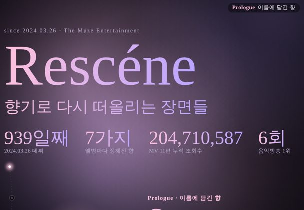
01향기 연대기Handwritten Journal — 손글씨 일기장 · 폴라로이드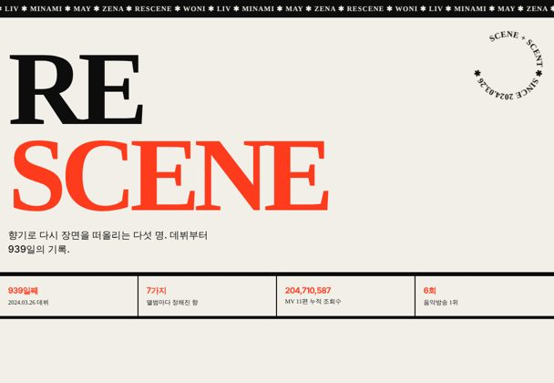
02스위스 그리드Swiss Grid — 거대한 숫자와 빨강/검정 그리드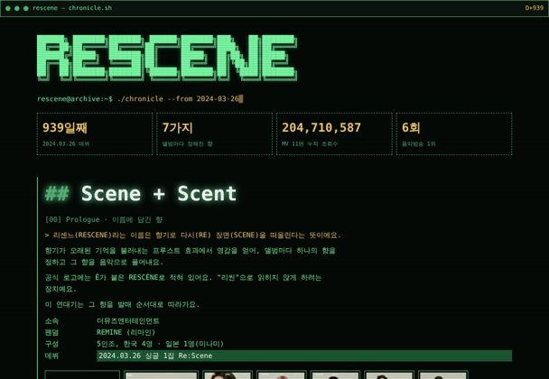
03터미널Terminal — 초록 모노스페이스 CLI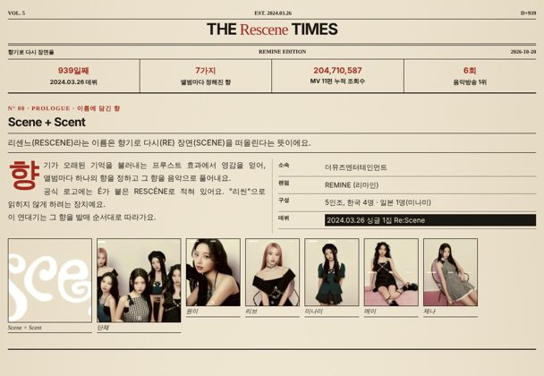
04신문Newspaper — 1면 기사 · 다단 조판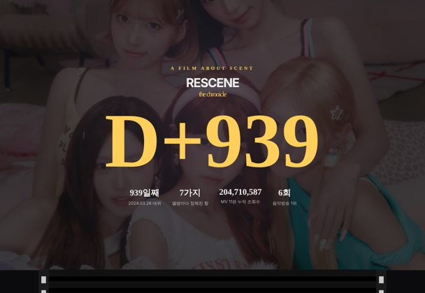
05필름 릴Film Reel — 스프로킷 필름 한 컷씩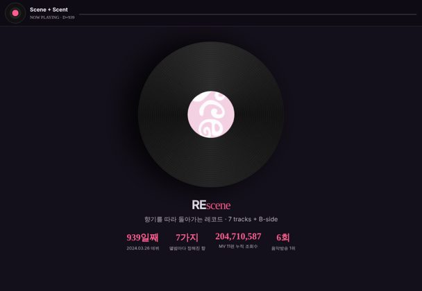
06바이닐Vinyl — 돌아가는 LP · NOW PLAYING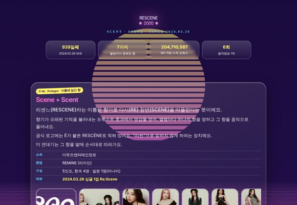
07Y2K 크롬Y2K Chrome — 네온 크롬 · 레트로 퓨처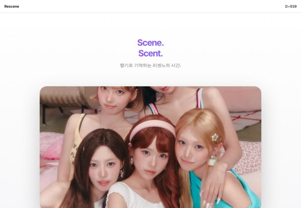
08미니멀 라이트Minimal Light — 흰 배경 · 큰 타이포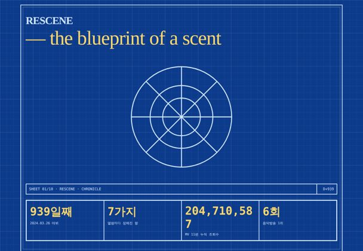
09블루프린트Blueprint — 청사진 도면 · 치수선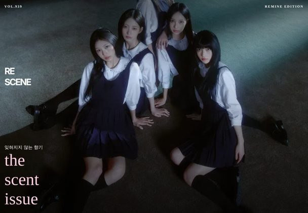
10매거진Magazine — 잡지 커버 · 풀블리드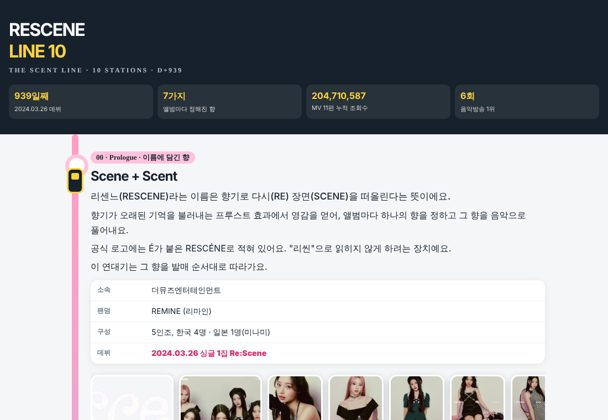
11메트로 노선도Metro Line — 지하철 노선 · 달리는 열차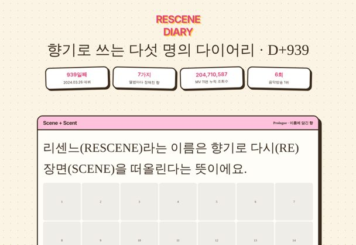
12플래너Planner — 다이어리 · 스티커 달력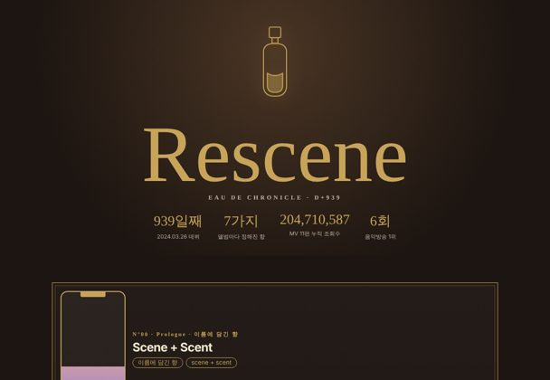
13아포테카리Apothecary — 향수 연구소 · 시약병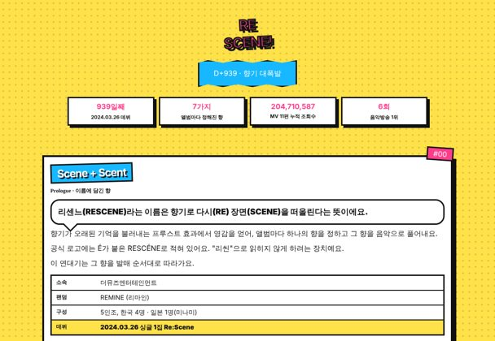
14팝 코믹Pop Comic — 만화 컷 · 하프톤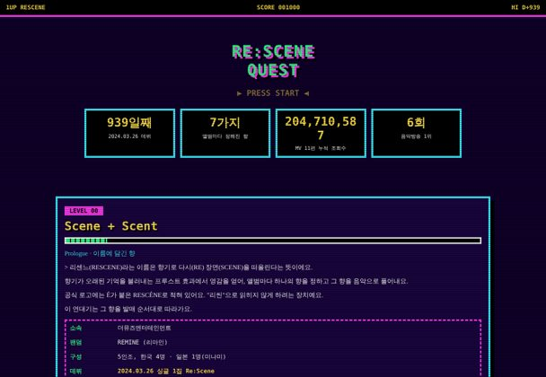
15픽셀 아케이드Pixel Arcade — 8비트 게임 레벨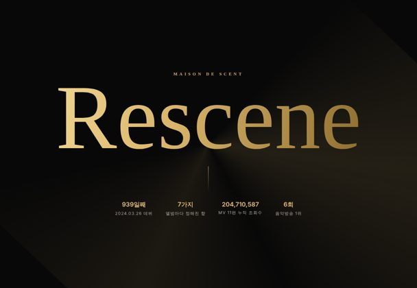
16골드 럭셔리Gold Luxury — 블랙 & 골드 메종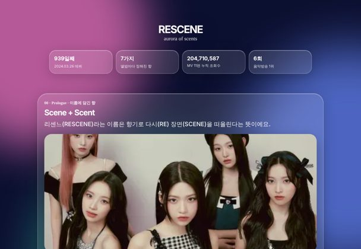
17글래스 오로라Glass Aurora — 유리 카드 · 오로라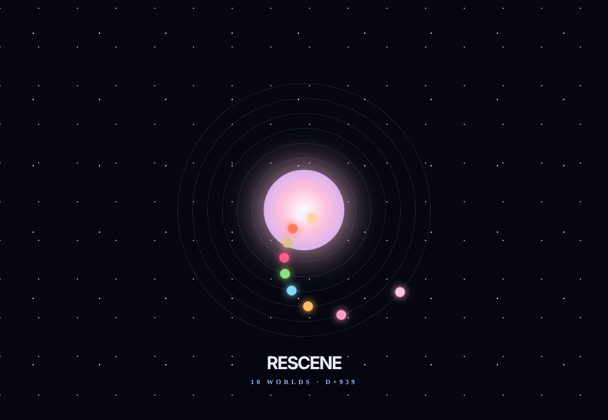
18오르빗Orbit — 행성 궤도 · 우주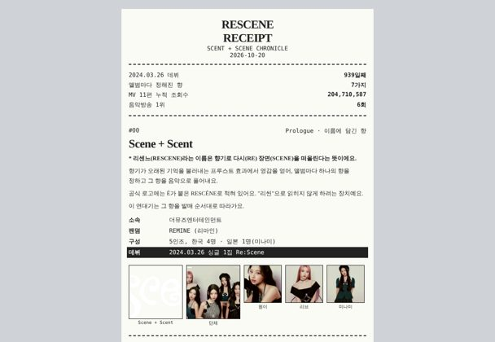
19영수증Receipt — 감열지 영수증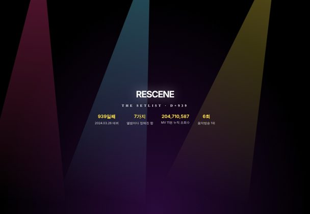
20스포트라이트Spotlight Setlist — 무대 조명 · 세트리스트